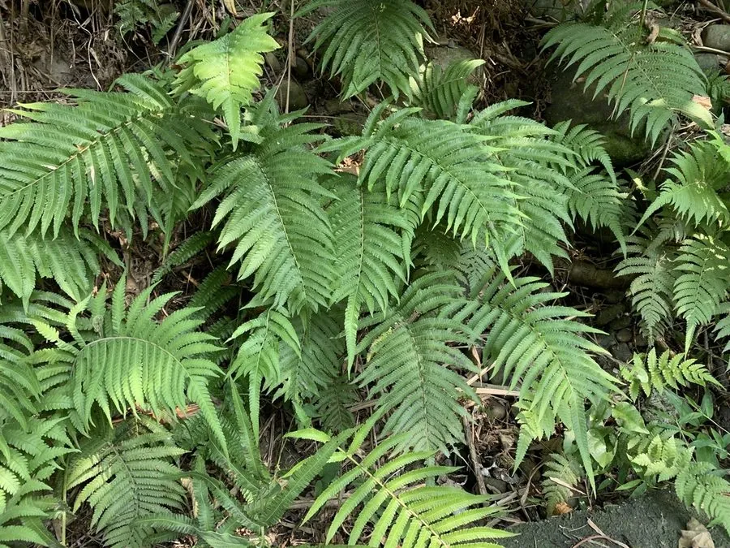

蕨类与裸子植物 · 植物界
渐尖毛蕨 Cyclosorus acuminatus

渐尖毛蕨的羽片先端渐尖、叶背有毛，孢子囊群圆而整齐，是南方溪边与林缘常见的金星蕨科蕨类植物。
- 分类
- 门蕨类植物门纲水龙骨纲目水龙骨目科金星蕨科属毛蕨属
- 栖息环境
- 溪边、林缘、灌丛与阴湿山坡，喜温暖湿润半阴
- 地理分布
- 中国长江以南各地，日本、东南亚也有分布
- 保护级别
- 暂无评估；野生种群常见
物种志
渐尖毛蕨是金星蕨科多年生蕨类，株高 0.5–1.2 m。根状茎横走，叶近生；叶片二回羽状深裂，轮廓长圆状披针形，羽片先端渐尖，因此得名；叶面有短毛，叶背沿脉有柔毛和腺体。孢子囊群圆形，生于侧脉中部，成熟时褐色，囊群盖圆肾形，有毛。
渐尖毛蕨喜温暖湿润、半阴环境，多生于溪边、林缘、灌丛与阴湿山坡，在南方丘陵地区很常见。它以孢子繁殖，根状茎可蔓延，常成片生长，是林下和溪边地被的优良材料。渐尖毛蕨叶片舒展、株形整齐，也可用于阴湿处绿化。它属于金星蕨科，这个科的许多种类外形相似、分类复杂，鉴定时需观察孢子囊群、叶脉和鳞片等细节。
形态与习性
- 株高0.5–1.2 m
- 叶二回羽状深裂，羽片先端渐尖
- 孢子囊群圆形，囊群盖圆肾形
- 生境溪边与林缘阴湿处
- 用途林下与溪边地被
趣味知识
- 渐尖毛蕨的羽片先端细长渐尖，名字由此而来。
- 它的孢子囊群圆而整齐，囊群盖上有毛。
- 渐尖毛蕨常成片生长在南方溪边和林缘。